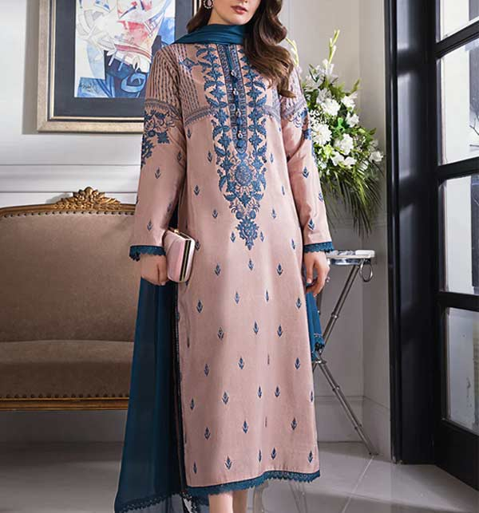

Dresses: Summer dresses are a popular choice for women. They come in various styles such as sundresses, maxi dresses, and shirt dresses. They are typically made from lightweight fabrics like cotton, linen, or chiffon, which allow air circulation and prevent excessive sweating.
